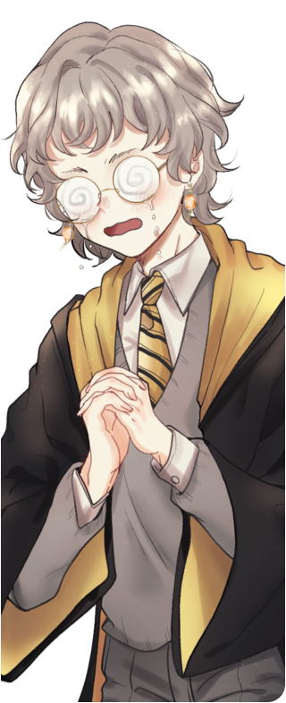
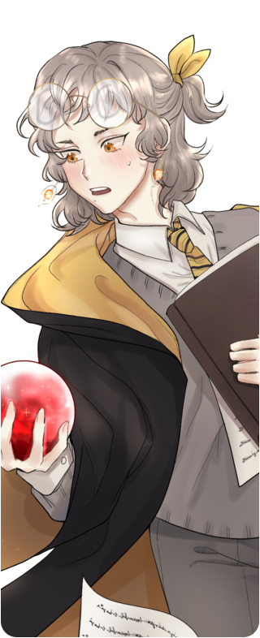
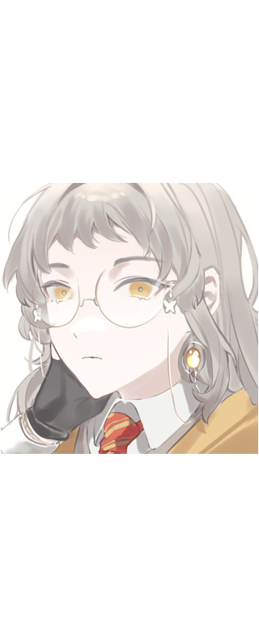
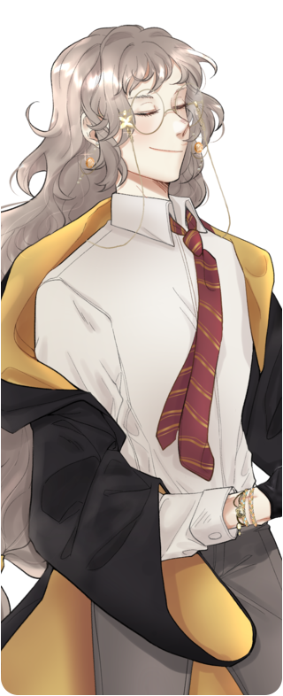
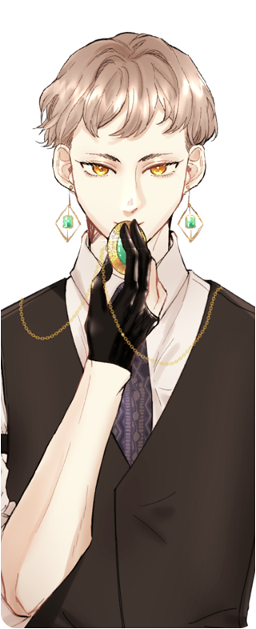
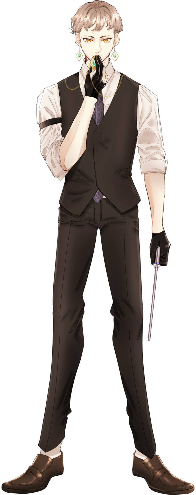

Eladha Spencer
엘라하 스펜서





[ 블랙 나이트 ]
“ 네가 백(白)을 잡아도 지진 않을 거거든. ”
나이
25세
기숙사
후플푸프
“너는 세속적 야망보다 공동체의 안녕을 원하잖니.”
진영
불사조 기사단
직업
체스 기사
국적
아일랜드인
혈통
순수혈통
키/무게
182cm/70kg
성별
시스젠더 남성
지팡이
포도나무/유니콘의 털/10.5인치/꽤 나긋나긋함
성격
# 승부사
모 아니면 도로 유명한 승부사 기질을 타고났다. 경기 스타일 대체로 과감하며 나이를 먹을수록 수가 세심해지는 것에 가깝다. 절반의 가능성이 보인다면 망설임 없이 승부를 걸고 운을 끌어오기 위해 들일 수 있는 모든 노력을 들인다. 프로 체스기사여도 여전히 결과보단 과정을 즐기는 사람이지만, 승리하러 왔다면 승부에 임하는 자세가 특히 남다르다. 해야 할 말을 하고, 한 수도 물러주지 않는다. 원래도 타고나기가 그리 녹록하고 말랑한 사람은 아니었으니, 그저 어렸을 적의 강박에서 벗어나 본성이 드러났다 볼 수 있겠다.
# 부성애
세상에서 가장 사랑하는 그의 아들, 에이더스 디안케트 스펜서에게 바치는 애정이 아무래도 남다른 편이다. 물론 엘라하에게 그 점을 짚는다면 내가 아들바보인 게 아니라 모든 부모가 다 그러하며 우리 애는 그냥도 귀엽다고 대답하겠으나…. 청소년 시절부터 청년기까지 변함없이 만인에게 다정하지만, 아들에 대한 공격에는 특히 민감해서 정색하곤 한다. 아이를 위해서라면 뭐든지 할 수 있다. 그래서 불사조 기사단에 가담한 것도 있었고.
# 애처가
사별한 메이 스펜서에게 바치는 그 사랑 또한 도드라지는 정도인데, 대화를 나눠보면 아내가 아이를 낳다 산고로 사망한 사실을 입에 잘 올리지 않아서 거의 살아 있는 사람처럼 이야기 하고 있는 일이 많다. 죽음을 극복하지 못해서가 아니라 구태여 전장 나와 눈물 팔고 동정 팔 생각이 없기 때문이다. 그의 가정사는 구구절절하다면 구구절절하지만 연민을 원하지 않는다. 더불어 머글인 아내에게 특히나 죽음을 먹는 자들 쪽에서 무슨 말을 할지는 뻔해서, 아내의 명예를 위해서라도 별로 말을 꺼내고 싶어하진 않는다. 그야말로 아들과 더불어 가장 지키고 싶어 하는 최후의 보루.
기타
● 아일랜드의 수도 더블린 출신, 요컨대 따져보면 영국으로 유학을 왔던 셈이다.
○ 현 시점 어머니도 돌아가신 상태다. 지병이 악화되어 사별했다. 이 과정에서 소냐가 임종을 지키지 못했다.
○ 녹턴 가문은 더블린에서 오랫동안 탐정 사무소를 운영한 순수 혈통 가문이다. 대체로 오러 등 수사 직종에 있는 마법사가 인력이 부족하여 수사하지 못하는 자잘한 사건들을 수리하여 미스터리를 해결했다.
○ 25살 시점, 엘라하의 친형인 누아다 녹턴이 더블린 탐정 사무소를 운영한다.
○ 아일랜드의 유서 깊은 순수 혈통 가문이라는 자부심이 대단하며 녹턴 가문에서 태어난 이들은 성씨가 녹턴이거나 말거나 퍼스트 네임 혹은 미들 네임에 주로 아일랜드 신화, 켈트 신화 속 신들 이름이 붙는다.
○ 엘라하의 이름 또한 켈트 신화에서 따왔다.
● 어린 시절엔 형이 이미 슬리데린에 재학하고 있었던 까닭에 막연히 슬리데린에 들어가고 싶어 했지만, 배정식에서 모자가 그의 부탁을 들어주지 않았다.
● 메이 스펜서와 결혼식을 올린 일로 인해 녹턴 가문에서 파문당했다. 따라서 현재 그의 형이 어떻게 지내는지, 그 간단한 안부조차 알지 못한다. 여지껏 형제 사이가 냉전인 셈인데, 엘라하는 혈통 떠나 조카도 있는데 형이 언제까지고 자신과 아들을 안 보진 않을 거라고, 기다리다 보면 화해할 날이 올 거라고 적당히 안일하게 생각한다. 가족이란 게 그런 것이지 않냐면서.
다만 본인은 녹턴 가문에서 파문당했으므로, 아내의 성인 스펜서라는 성을 사용한다. 이미 그렇게 된지가 5년이나 지나서 이제 와 누가 녹턴이라고 부르면 반응이 좀 느린 편이다.
● 15살에 아내 메이 스펜서를 우연히 더블린의 한 도서관에서 만났고, 그녀의 아버지가 체스 기사였던 까닭에 (솔직히 그 시절엔 메이와 친해지고 싶어서) 체스에 입문했다.
매사에 긴장을 크게 하고 성적도 엉망에 잘난 형, 잘난 친구들에게 이리 치이고 저리 치이며 상당히 소극적인 청소년기를 보내던 도중 마을에서 이루어졌던 체스 대회에서 운 좋게 우승하며 체스 대국을 통해서 조금씩 본인을 사랑하는 방법을 배워나갔다.
지금은 처가와 무관하게 체스를 좋아하고, 그밖의 보드게임도 이것저것 즐긴다. 최근에 관심을 보이는 건 바둑 쪽.
● 머글 사회에서 샤인 스펜서라는 이름으로 체스기사 활동을 한다. 이유는 엘라하라는 퍼스트 네임조차도 녹턴 가문의 전통에 따른 것이라 마법사스럽게 느껴지고, 또 메이 스펜서와 결혼하면서 머글 사회로 옮겨온 마당에 마법사들과 시비가 붙고 싶지도 않아서였다.
체스기사로선 준수한 성적을 낸다. 그것만으로 먹고 살 정도이니, 어느 정도 수준일 수밖에 없다. 대회 우승 기록도 있고, 최근엔 아쉽게 준우승에 그친 대회도 하나 있었다.
체스기사로서의 성적은 물론 머글 사회에 신문이나 잡지를 통해 가끔 보도되지만, 체스라는 종목 자체가 축구만큼 대국민 인기 종목은 아니라 길거리를 다녀도 아는 사람만 알아보는 정도다.
● 아버지 달바흐 녹턴이 돌아가신 이후, 메이 스펜서와 함께 이른바 사랑의 도피 비슷한 것을 했다. 학창시절 엘라하를 알았던 사람들은 그야말로 기절할 노릇이었고, 녹턴 가문의 차남이 머글과 눈이 맞아 도망쳤다며 구설수에도 좀 올랐었다. 누아다 녹턴이 그 직후에 엘라하를 꽤 추적했었기 때문에 그 추적을 피해다니느라 졸업 이후 20살까지 거의 실종 상태에 가까웠다. 20살에 메이 스펜서와 아예 결혼식을 올려버리면서 형인 누아다와 관계가 완전히 정리되었고, 그 후 리즈번으로 돌아와 지냈다.
달바흐 녹턴의 장례식에도, 메이 스펜서와의 결혼식에도 친구들에게 일절 연락 돌리지 않았다. 이유는 아버지의 장례식 때는 충격이 큰 나머지 부고를 돌릴 경황이 없었고, 메이와의 결혼식에는 메이가 머글이기 때문에 친구들 입장에서 불편할 수 있다 여겼기 때문에.
신혼여행은 스페인으로 다녀왔는데, 이유는 메이가 스페인 음식을 꽤나 좋아해서였다고….
이후 22살 되던 해, 메이 스펜서가 아이를 낳다 산고로 사망하며 또 한 번의 사별을 맞았다. 그 시기에 무척 힘들어 했지만, 아이도 있고 장인어른도 계셔서 다행히 잘 극복한 편이다. 물론 여전히 메이에게 편지를 쓰는 형식의 일기를 쓰거나, 가끔 자기 전에 메이의 사진을 보거나 하긴 하지만.
● 장인어른, 올랜도 스펜서. 여전히 리즈번에서 철물점을 한다. 외손자도 있고, 사위와의 사이도 썩 나쁘지 않아 교류가 잦다. 엘라하가 대회 때문에 자리를 비울 적이면 아이를 맡아주신다.
● 아들, 에이더스 디안케트 스펜서. 전반적으로 엄마인 메이를 많이 닮았고, 눈이 아빠인 엘라하를 닮았다. 올해 3살. 의외로 ‘에이더스’라는 이름을 엘라하가 골랐고 ‘디안케트’라는 이름을 엄마인 메이가 골랐다. 엘라하는 녹턴 가문의 전통에 따라 아이 이름을 지을 필요가 없다고 만류했지만, 당시 임신 중이었던 메이가 그래도 절반은 엘라하의 아이인데 구태여 자기 신경 쓸 것 없다며 엘라하가 학창 시절 막연히 생각했던 그 이름을 아이의 미들네임으로 주자고 결정했다. 본의 아니게 퍼스트네임과 미들네임이 모두 긴 편이라, 아이가 태어나기 직전에 부부 둘이서 아이의 애칭을 ‘디’로 정했다. (에이더스와 디안케트라는 이름에 모두 D가 들어가기 때문에.) 따라서 엘라하도 대체로 아이를 ‘디’라고 부르는 일이 많다.
아이는 아직 마법사인가 아닌가 여부가 불분명하지만, 엘라하는 마법사일 가능성이 높다고 보고 있다. 만에 하나라도 마법사라면 호그와트와 이 사회가 지금처럼 이 모양 이 꼴이라면 학부모로서도 걱정스러워서 가만 있을 수가 없었다고.이래저래 전쟁에 참여한 이유에 아들인 ‘디’가 많이 연결되어 있다.
